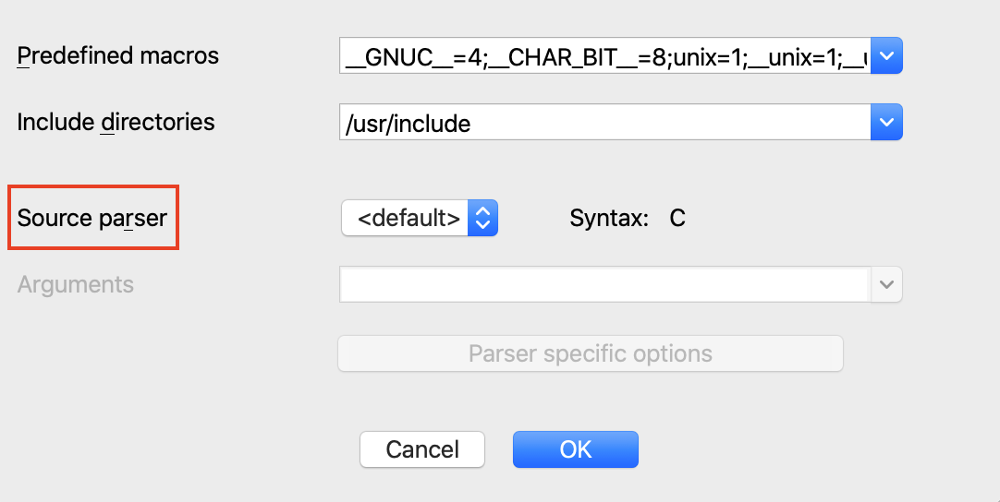
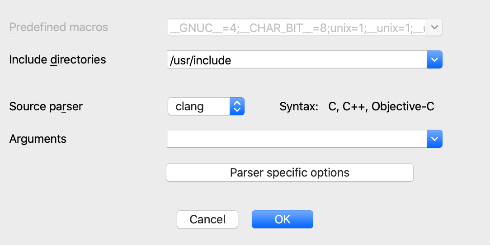
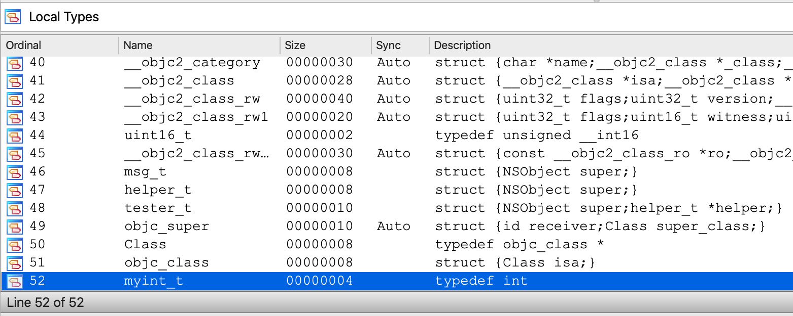
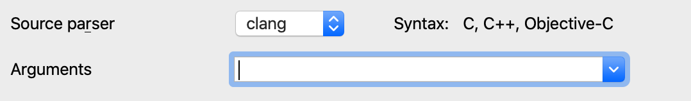
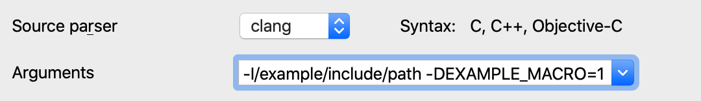
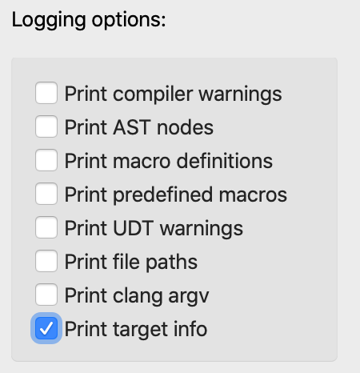
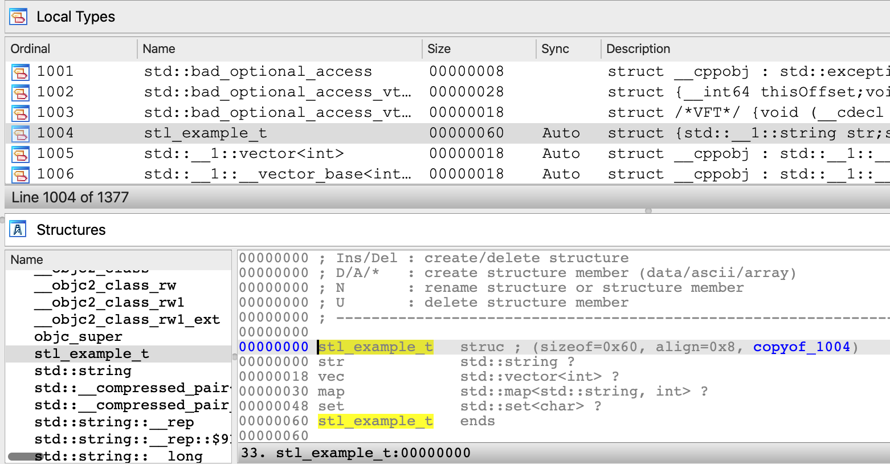
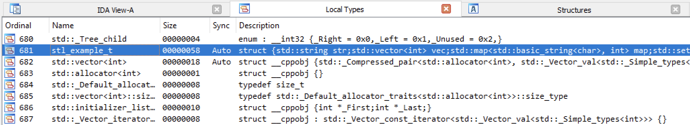
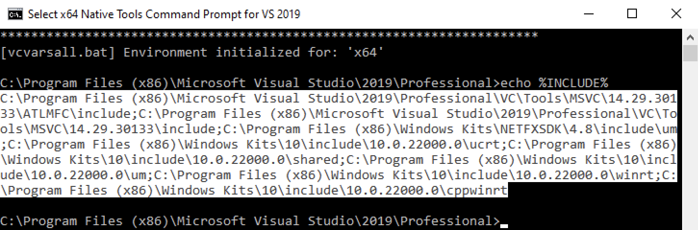
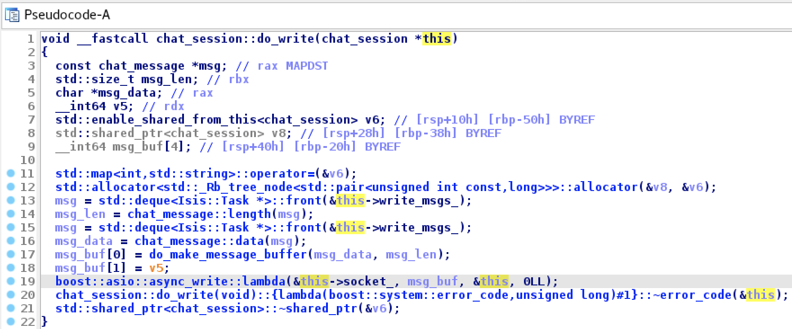

Using the IDAClang plugin for IDA Pro
Overview
The IDAClang plugin integrates the clang compiler frontend into IDA itself. This allows IDA to parse type information from complex C/C++/Objective-C source code and import it directly into an IDA database.
Libclang
IDAClang utilizes a specialized build of libclang - the opensource C API for the clang compiler. This custom library is also shipped with IDA alongside the plugin itself, so you do not need to worry about it. The plugin will find and load libclang automatically.
Our build of libclang is from Clang v13.0, so it can handle any Objective-C syntax and anything from C++20 and earlier.
Motivation
IDAClang was introduced as a more robust alternative to IDA’s built-in source code parser. The built-in parser can handle simple C source code, but naturally it struggles to handle complex C++ and Objective-C syntax. IDAClang solves this problem by outsourcing all the heavy lifting to a third-party library that can handle the ugly parsing operations. The plugin needs only to parse the abstract syntax tree generated by clang.
As a result, IDAClang should be much more flexible. You can even feed it complete .cpp source files. The plugin will extract whatever useful type information it can find, and ignore the rest.
VTables
One big advantage of using libclang is that we can take advantage of clang’s internal C++ VTable management. For example, when IDAClang parses a C++ class that looks like this:
class C
{
virtual void func(void);
};
The following types will be generated in the database:
struct __cppobj C
{
C_vtbl *__vftable /*VFT*/;
};
struct /*VFT*/ C_vtbl
{
void (__cdecl *func)(C *this);
};
To create the C_vtbl type, IDAClang traverses clang’s internal VTableLayout data structure. This data structure is the same mechanism that the clang compiler uses during the actual code generation. Thus, we can be very confident that IDAClang is producing correct vtable types - even in much more complex situations. After all, clang knows what it’s doing in this regard.
Moreover, when using IDAClang to generate a type library (see Building Type Libraries with IDAClang below), the plugin will take advantage of clang’s name mangling to populate the symbol table:
SYMBOLS
FFFFFFFF 00000000 void __cdecl _ZN1C4funcEv(C *this);
00000018 00000000 C_vtbl_layout _ZTV1C;
TYPES
struct C_vtbl_layout
{
__int64 thisOffset;
void *rtti;
void (__cdecl *func)(C *this);
};
Here IDAClang created symbols for the C::func member function, as well as the mangled VTable symbol for the C class.
Templates
Another notable advantage of using libclang is it allows us to gracefully handle C++ templates.
For example, consider the following template declarations:
template <typename T, typename V> struct S
{
T x;
V y;
};
typedef S<int, void *> instance_t;
When clang parses the instance_t declaration, internally it will generate a structure that represents the specialized template S<int, void *>. The IDAClang plugin will then use this internal representation to generate a valid type for S<int, void *> in IDA’s type system:
struct S<int, void *>
{
int x;
void *y;
};
typedef S<int, void *> instance_t;
The type with name S<int, void *> represents the fully resolved structure, with all template arguments replaced. This all happens automatically, and it is especially useful in more complex situations - such as template classes containing virtual methods that depend on template parameters, resulting in specialized VTables.
The IDAClang UI
Enabling the IDAClang Parser
To provide support for third-party parsers, IDA now has a new Source parser field in the Options>Compiler dialog:

To enable the IDAClang parser, select the clang parser from the dropdown menu:

As a quick sanity check, try saving the following declaration in a file called test.h:
typedef int myint_t;
Parse the file using menu File>Load file>Parse C header file. IDA should print this to the output window:
/private/tmp/test.h: successfully compiled
The type should now be present in the Local Types view:

Configuring IDAClang
Of course, IDAClang is capable of parsing source code that is much more complex. Often times this requires more detailed configuration of the parser invocations.
To support this, the Compiler>Options dialog provides the Arguments field:

In this field you can provide any argument you would typically provide to the clang compiler when invoking it from the command line. For example:

One of the more important clang arguments is the -target option, which specifies the target architecture and platform. This allows clang to properly configure itself to parse macOS/Windows/Linux system headers. Clang calls this the target “triple” because it is often given in the form of:
-target <arch>-<vendor>-<platform>
Some examples:
-target arm64-apple-darwin
-target x86_64-pc-win32
-target i386-pc-linux
The various combinations of supported targets is documented in more detail here.
Note that in the simple test.h example above, we did not specify a target platform. In this case clang will assume that the target platform is the same as the host machine IDA is currently running on. You can print the exact target used by clang by opening Options>Compiler>Parser specific options and enable the following option:

Now when we use IDAClang to parse the test.h file, it will print a message:
IDACLANG: triple: x86_64-apple-macosx10.15.0
Which would be the typical output when IDA is running on macOS. On Windows the default will look something like:
IDACLANG: triple: x86_64-pc-windows-msvc19.29.30137
And on Linux:
IDACLANG: triple: x86_64-unknown-linux-gnu
Such is the default behavior within libclang, but clang supports a wide variety of platforms and architectures. You can almost always specify a target that will match the input binary in the current database.
Example Files Package
You can download all the examples referenced in this tutorial from here:
{% file src=“assets/examples.zip” %}
STL Example
Now let’s try invoking IDAClang on some more real-world source code.
In this example, assume we are analyzing an x64 binary that makes heavy use of the C++ Standard Template Library. Then assume that at some point we want to create a structure that looks like this:
#include <string>
#include <vector>
#include <map>
#include <set>
struct stl_example_t
{
std::string str;
std::vector<int> vec;
std::map<std::string, int> map;
std::set<char> set;
};
This is the contents of stl/stl_example.h from examples.zip. IDA’s default parser cannot handle such complex C++ syntax, so IDAClang is our only hope of importing this type. The precise configuration of IDAClang will vary between platforms, so we’ll demonstrate them all separately.
To parse stl_example.h on macOS, we’ll have to point IDAClang to the macOS SDK as well as the STL system headers:
-target x86_64-apple-darwin
-x c++
-isysroot /Applications/Xcode.app/Contents/Developer/Platforms/MacOSX.platform/Developer/SDKs/MacOSX.sdk
-I/Applications/Xcode.app/Contents/Developer/Toolchains/XcodeDefault.xctoolchain/usr/include/c++/v1
-I/Applications/Xcode.app/Contents/Developer/Toolchains/XcodeDefault.xctoolchain/usr/lib/clang/11.0.3/include
Copy the text above into the Options>Compiler>Arguments field.
Note that we point IDAClang to the macOS SDK with the -isysroot option and use the -I option to allow IDAClang to find the proper system headers in the Xcode toolchain. Be wary of the last option (ending with usr/lib/clang/11.0.3/include). This path contains the clang version number, so it might be different on your machine. Also make special note of the -x c++ option. This is used to inform libclang that the input source will not be plain C, which is the default syntax for .h files in libclang.
Now we can use File>Load file>Parse C header file to parse stl_example.h. This will generate a useful type for stl_example_t in our database:

On Windows the configuration is a bit different. If you’re using Visual Studio, libclang is normally able to detect common header paths automatically.
Thus you will likely only need to specify the following arguments in Options>Compiler>Arguments:
-target x86_64-pc-win32 -x c++
Ideally this will be enough to parse stl_example.h and generate some useful type info:

If for whatever reason the heuristics within libclang fail to find the headers on your system, it is very easy to specify the header paths manually. Simply open a Visual Studio x64 Command Prompt and run the following command:
echo %INCLUDE%
This will print a semicolon-separated list of the header paths used on your system:

This list can be copied directly into the Options>Compiler>Include directories field in IDA. IDAClang will automatically process this list and pass the header paths to clang upon invocation of the parser. This is likely enough to handle most Windows-based source code.
On Linux you can determine the header paths used your system by running the following command:
cpp -v
This will print something like:
#include <...> search starts here:
/usr/lib/gcc/x86_64-linux-gnu/6/include
/usr/local/include
/usr/lib/gcc/x86_64-linux-gnu/6/include-fixed
/usr/include/x86_64-linux-gnu
/usr/include
You can then use these arguments in the Options>Compiler>Arguments field in IDA:
-target x86_64-pc-linux-gnu
-x c++
-I/usr/lib/gcc/x86_64-linux-gnu/6/include
-I/usr/local/include
-I/usr/lib/gcc/x86_64-linux-gnu/6/include-fixed
-I/usr/include/x86_64-linux-gnu
-I/usr/include
Then use File>Load file>Parse C header file to parse stl_example.h.
Invoking IDAClang from IDAPython
Like any good IDA feature, IDAClang can also be invoked from an IDAPython script.
IDA 7.7 introduced the ida_srclang module to provide simple support for invoking third-party parsers from IDAPython. Use the following IDAPython commands for an overview of this new module:
import ida_srclang
? ida_srclang
? ida_srclang.parse_decls_with_parser
? ida_srclang.set_parser_argv
The function ida_srclang.parse_decls_with_parser can notably be used to parse source code snippets:
Python>? ida_srclang.parse_decls_with_parser
Help on function parse_decls_with_parser in module ida_srclang:
parse_decls_with_parser(*args) -> 'int'
Parse type declarations using the parser with the specified name
@param parser_name: (C++: const char *) name of the target parser
@param til: (C++: til_t *) type library to store the types
@param input: (C++: const char *) input source. can be a file path or decl string
@param is_path: (C++: bool) true if input parameter is a path to a source file, false if the
input is an in-memory source snippet
@retval -1: no parser was found with the given name
@retval else: the number of errors encountered in the input source
If the is_path argument is False, this function will assume the input argument is a string that represents a source code snippet. Otherwise it will be considered a path to a source file on disk. Also note the til parameter, which will often times be None. This ensures the parsed types are imported directly into the current database.
Examples
IMPORANT NOTE: when libclang parses in-memory strings, it makes no assumptions about the expected syntax. Thus, you must specify the -x option to tell clang which syntax to expect before invoking the parser. Here are the the known syntax directives:
-x c
-x c++
-x objective-c
-x objective-c++
For example, this is how you would use ida_srclang to parse a simple C source string with IDAClang:
import ida_srclang
# tell clang the expected syntax
ida_srclang.set_parser_argv("clang", "-x c")
# parse a type string
ida_srclang.parse_decls_with_parser("clang", None, "typedef int myint_t;", False)
STL Example Revisited
We can also handle the same STL example discussed previously, but this time parse stl_example_t as a source snippet:
import ida_srclang
clang_argv = [
"-target x86_64-apple-darwin",
"-x c++",
"-isysroot /Applications/Xcode.app/Contents/Developer/Platforms/MacOSX.platform/Developer/SDKs/MacOSX.sdk",
"-I/Applications/Xcode.app/Contents/Developer/Toolchains/XcodeDefault.xctoolchain/usr/include/c++/v1",
"-I/Applications/Xcode.app/Contents/Developer/Toolchains/XcodeDefault.xctoolchain/usr/lib/clang/11.0.3/include",
]
ida_srclang.set_parser_argv("clang", " ".join(clang_argv))
decl = """
#include <string>
#include <vector>
#include <map>
#include <set>
struct stl_example_t
{
std::string str;
std::vector<int> vec;
std::map<std::string, int> map;
std::set<char> set;
};
"""
ida_srclang.parse_decls_with_parser("clang", None, decl, False)
This should produce an identical result as before when we used File>Load file>Parse C header file for stl_example.h.
Boost Example
In this example we will show how IDAClang can be used in batch mode to improve the analysis of a binary compiled from Boost headers. The experiment will be performed on Debian Linux with gcc 6.3.0.
Consider the following source files from the boost/ directory in examples.zip:
- chat_server.cpp
- chat_message.hpp
These sources were taken directly from the Boost 1.77 examples, and we’ll use them to compile a test binary. Begin by downloading the Boost 1.77.0 headers, then compile the chat_server application:
g++ -I boost_1_77_0 -std=c++11 -o chat_server.elf chat_server.cpp -lpthread
Since Boost is a template library, it will generate a bloated binary that contains thousands of instantiated template functions. Thus, IDA’s initial analysis of chat_server.elf will likely not be very pretty. How can IDAClang help us with this? Consider boost/chat_server.py from examples.zip:
import sys
import ida_pro
import ida_auto
import ida_srclang
clang_argv = {
"-target x86_64-pc-linux",
"-x c++",
"-std=c++11",
"-I./boost_1_77_0",
# NOTE: include paths were copied from the output of `cpp -v`. they might differ on your machine.
"-I/usr/lib/gcc/x86_64-linux-gnu/6/include",
"-I/usr/local/include",
"-I/usr/lib/gcc/x86_64-linux-gnu/6/include-fixed",
"-I/usr/include/x86_64-linux-gnu",
"-I/usr/include",
}
# invoke the clang parser
ida_srclang.set_parser_argv("clang", " ".join(clang_argv))
ida_srclang.parse_decls_with_parser("clang", None, "./chat_server.cpp", True)
# analyze the input file
ida_auto.auto_mark_range(0, BADADDR, AU_FINAL)
ida_auto.auto_wait()
# save and exit
ida_pro.qexit(0)
This script will configure IDAClang to parse the chat_server.cpp source file and extract any type information it finds, then analyze the input with the imported type info, and saves the resulting database in chat_server.i64. You can run the script like this:
idat64 -c -A -Schat_server.py -Oidaclang:t -ochat_server.i64 -Lchat_server.log chat_server.elf
You may have noticed this option:
-Oidaclang:t
This option is passed to the IDAClang plugin and it enables CLANG_APPLY_TINFO (see idaclang.cfg for more info).
Now let’s open the resulting database chat_server.i64 in IDA, and try decompiling some functions. Immediately we see that the analysis does benefit from the imported type info. For example chat_session::do_write seems somewhat intelligible after some minor simplifications:

Since IDAClang parsed the chat_session class, we now have a correct prototype for chat_session:do_write, as well as a valid chat_session structure. Note that references to chat_session.write_msgs_ (std::deque<chat_message>) and chat_session.socket (boost::asio::ip::tcp::socket) were correctly resolved.
Granted, this is not the most realistic example. It’s not often we have access to the full source code of the target binary, but hopefully this shows that whenever any relevant source code is available, IDAClang can take full advantage.
Building Type Libraries with IDAClang
The IDAClang plugin is useful for enriching your database with complex type information, but often times the imported types are relevant to more than just one database. In this section we discuss how you can use IDAClang to generate rich, generic type libraries for IDA Pro.
Hex-Rays also provides a command-line version of IDAClang(which you can download from our Customer Portal), specifically designed for building custom Type Information Libraries (TILs) that can be loaded into any IDA database.
After downloading the idaclang binary, copy it to the idabin/ directory of your IDA installation (next to the libclang dll).
For an overview of idaclang’s functionality, run:
idaclang -h
For a quick demonstration, save the following source in a file named test.h:
class C
{
virtual void func(void);
};
You can compile this header into a type library by invoking idaclang the same way you would typically invoke the clang compiler from the command line:
idaclang -x c++ -target x86_64-pc-linux test.h
This will generate a file called test.til that contains all types that were parsed in test.h. Try dumping the TIL with the tilib utility.
tilib -l /tmp/test.til
TYPE INFORMATION LIBRARY CONTENTS
Description:
Flags : 0107 compressed macro_table_present extended_sizeof_info sizeof_long_double
Base tils :
Compiler : GNU C++
sizeof(near*) = 8 sizeof(far*) = 8 near code, near data, cdecl
default_align = 0 sizeof(bool) = 1 sizeof(long) = 8 sizeof(llong) = 8
sizeof(enum) = 4 sizeof(int) = 4 sizeof(short) = 2
sizeof(long double) = 16
SYMBOLS
FFFFFFFF 00000000 void __cdecl ZN1C4funcEv(C *__hidden this);
00000018 00000000 C_vtbl_layout ZTV1C;
TYPES
00000008 struct __cppobj C {C_vtbl *__vftable /*VFT*/;};
00000008 struct /*VFT*/ C_vtbl {void (__cdecl *func)(C *__hidden this);};
00000018 struct C_vtbl_layout {__int64 thisOffset;void *rtti;void (__cdecl *func)(C *__hidden this);};
MACROS
Total 2 symbols, 3 types, 0 macros
The tool also provides extra arguments to configure the til generation. They are given the –idaclang- prefix so they can be easily separated from the clang arguments. For example:
idaclang --idaclang-tilname /tmp/test2.til -x c++ -target x86_64-pc-linux test.h
This will create the library at /tmp/test2.til, instead of the default location.
Now let’s try building some type libraries from real-world code. The examples in this section will demonstrate the power of IDAClang by creating TILs from many different opensource C++ projects. They cover a large variety of platforms, architectures, and codebases, so it is best to unify the build system using makefiles.
At the top level of examples.zip there should be a makefile named idaclang.mak:
IDACLANG_ARGS += --idaclang-log-all
IDACLANG_ARGS += --idaclang-tilname $(TIL_NAME)
IDACLANG_ARGS += --idaclang-tildesc $(TIL_DESC)
CLANG_ARGV += -ferror-limit=50
all: $(TIL_NAME)
.PHONY: all $(TIL_NAME) clean
$(TIL_NAME): $(TIL_NAME).til
$(TIL_NAME).til: $(TIL_NAME).mak $(INPUT_FILE)
idaclang $(IDACLANG_ARGS) $(CLANG_ARGV) $(INPUT_FILE) > $(TIL_NAME).log
tilib64 -ls $(TIL_NAME).til > $(TIL_NAME).til.txt
clean:
rm -rf *.til *.txt *.log
This makefile defines a simple rule for building a TIL using the idaclang command-line utility. It will be used extensively in the following examples.
IDASDK
Hex-Rays publishes an SDK for developing custom IDA plugins, which is comprised mostly of C++ header files. Thus, it is a perfect use case for IDAClang. In this example we will build a type library for IDA itself, using IDA SDK, which the latest version you can download from Customer Portal.
After downloading idasdk.zip, unzip it into the idasdk subdirectory of examples.zip.
To build this TIL we only need to create a single header file that includes all headers from the IDA SDK, and then parse this file with idaclang. See examples/idasdk/idasdk.h, which contains include directives for all files in idasdk77/include (they happen to be in alphabetical order, but the order shouldn’t matter much):
#include <auto.hpp>
#include <bitrange.hpp>
#include <bytes.hpp>
// ... etc
#include <typeinf.hpp>
#include <ua.hpp>
#include <xref.hpp>
The IDAClang configuration required to parse idasdk.h is highly platform-dependent, so we provide separate makefiles for each of IDA’s supported platforms.
To demonstrate how we might build idasdk.h on MacOSX, see examples/idasdk/idasdk_mac_x64.mak:
TIL_NAME = idasdk_mac_x64
TIL_DESC = "IDA SDK headers for MacOSX"
INPUT_FILE = idasdk.h
SDK = /Applications/Xcode.app/Contents/Developer/Platforms/MacOSX.platform/Developer/SDKs/MacOSX10.15.sdk
TOOLCHAIN = /Applications/Xcode.app/Contents/Developer/Toolchains/XcodeDefault.xctoolchain
CLANG_ARGV = -target x86_64-apple-darwin \
-x objective-c++ \
-isysroot $(SDK) \
-I$(TOOLCHAIN)/usr/include/c++/v1 \
-I$(TOOLCHAIN)/usr/lib/clang/11.0.3/include \
-I./idasdk77/include/ \
-D__MAC__ \
-D__EA64__ \
-Wno-nullability-completeness
include ../idaclang.mak
You can build the TIL with:
make -f idasdk_mac_x64.mak
This will generate a type library named idasdk_mac_x64.til, along with a dump of the til contents in idasdk_mac_x64.til.txt. In the text dump we might notice some familiar types:
00000010 struct __cppobj range_t
{
ea_t start_ea;
ea_t end_ea;
};
// 0. 0000 0008 effalign(8) fda=0 bits=0000 range_t.start_ea ea_t;
// 1. 0008 0008 effalign(8) fda=0 bits=0000 range_t.end_ea ea_t;
// 0010 effalign(8) sda=0 bits=0080 range_t struct packalign=0
00000050 struct __cppobj memory_info_t : range_t
{
qstring name;
qstring sclass;
ea_t sbase;
uchar bitness;
uchar perm;
};
// 0. 0000 0010 effalign(8) fda=0 bits=0020 memory_info_t.range_t range_t;
// 1. 0010 0018 effalign(8) fda=0 bits=0000 memory_info_t.name qstring;
// 2. 0028 0018 effalign(8) fda=0 bits=0000 memory_info_t.sclass qstring;
// 3. 0040 0008 effalign(8) fda=0 bits=0000 memory_info_t.sbase ea_t;
// 4. 0048 0001 effalign(1) fda=0 bits=0000 memory_info_t.bitness uchar;
// 5. 0049 0001 effalign(1) fda=0 bits=0000 memory_info_t.perm uchar;
// 004A unpadded_size
// 0050 effalign(8) sda=0 bits=0080 memory_info_t struct packalign=0
It’s worth building a separate til for both x64 and arm64 macOS. IDA’s source code is not very architecture dependent, but many system headers might be. So it’s best to be as precise as possible.
To build this TIL on macOS12 for Apple Silicon, the approach is very similar:
TIL_NAME = idasdk_mac_arm64
TIL_DESC = "IDA SDK headers for arm64 macOS 12"
INPUT_FILE = idasdk.h
SDK = /Applications/Xcode.app/Contents/Developer/Platforms/MacOSX.platform/Developer/SDKs/MacOSX12.0.sdk
TOOLCHAIN = /Applications/Xcode.app/Contents/Developer/Toolchains/XcodeDefault.xctoolchain
CLANG_ARGV = -target arm64-apple-darwin \
-x objective-c++ \
-isysroot $(SDK) \
-I$(TOOLCHAIN)/usr/lib/clang/13.0.0/include \
-I./idasdk77/include/ \
-D__MAC__ \
-D__EA64__ \
-D__ARM__ \
-Wno-nullability-completeness
include ../idaclang.mak
Note that we did not provide the path to the C++ STL headers like we did in idasdk_mac_x64.mak. On macOS12 the C++ headers are shipped within MacOSX12.0.sdk, so there is no need to explicitly tell idaclang where to find them.
To parse idasdk.h on Windows, use examples/idasdk/idasdk_win.mak:
TIL_NAME = idasdk_win
TIL_DESC = "IDA SDK headers for x64 Windows"
INPUT_FILE = idasdk.h
CLANG_ARGV = -target x86_64-pc-win32 \
-x c++ \
-I./idasdk77/include \
-D__NT__ \
-D__EA64__ \
-Wno-nullability-completeness
include ../idaclang.mak
Normally we do not need to specify any include paths, since idaclang can find the Visual Studio headers automatically. If it can’t, you can always explicitly provide include paths with the -I option.
Building idasdk.h on Linux is also fairly straightforward. See idasdk_linux.mak:
TIL_NAME = idasdk_linux
TIL_DESC = "IDA SDK headers for x64 linux"
INPUT_FILE = idasdk.h
GCC_VERSION = $(shell expr `gcc -dumpversion | cut -f1 -d.`)
CLANG_ARGV = -target x86_64-pc-linux \
-x c++ \
-I/usr/lib/gcc/x86_64-linux-gnu/$(GCC_VERSION)/include \
-I/usr/local/include \
-I/usr/lib/gcc/x86_64-linux-gnu/$(GCC_VERSION)/include-fixed \
-I/usr/include/x86_64-linux-gnu \
-I/usr/include \
-I./idasdk77/include/ \
-D__LINUX__ \
-D__EA64__ \
-Wno-nullability-completeness
include ../idaclang.mak
You can also include the decompiler types from the hexrays SDK in the type library for your version of idasdk. Simply copy hexrays.hpp from hexrays_sdk/ in your IDA installation to idasdkXX/include/, then add this line to idasdk.h:
#include <hexrays.hpp>
Then rebuild the TIL. It will likely yield some useful decompiler types:
00000050 struct __cppobj minsn_t
{
mcode_t opcode;
int iprops;
minsn_t *next;
minsn_t *prev;
ea_t ea;
mop_t l;
mop_t r;
mop_t d;
};
// 0. 0000 0004 effalign(4) fda=0 bits=0000 minsn_t.opcode mcode_t;
// 1. 0004 0004 effalign(4) fda=0 bits=0000 minsn_t.iprops int;
// 2. 0008 0008 effalign(8) fda=0 bits=0000 minsn_t.next minsn_t *;
// 3. 0010 0008 effalign(8) fda=0 bits=0000 minsn_t.prev minsn_t *;
// 4. 0018 0008 effalign(8) fda=0 bits=0000 minsn_t.ea ea_t;
// 5. 0020 0010 effalign(8) fda=0 bits=0000 minsn_t.l mop_t;
// 6. 0030 0010 effalign(8) fda=0 bits=0000 minsn_t.r mop_t;
// 7. 0040 0010 effalign(8) fda=0 bits=0000 minsn_t.d mop_t;
// 0050 effalign(8) sda=0 bits=0080 minsn_t struct packalign=0
00000028 struct __cppobj minsn_visitor_t : op_parent_info_t
{
minsn_visitor_t_vtbl *__vftable /*VFT*/;
};
// 0. 0000 0008 effalign(8) fda=0 bits=0100 minsn_visitor_t.__vftable minsn_visitor_t_vtbl *;
// 1. 0008 0020 effalign(8) fda=0 bits=0020 minsn_visitor_t.op_parent_info_t op_parent_info_t;
// 0028 effalign(8) sda=0 bits=0080 minsn_visitor_t struct packalign=0
Qt
In this example we will build a type library for the Qt Opensource UI Framework. The example uses Qt 5.15.2, but theoretically it can work for any Qt version. We assume you already have a Qt installation present on your system (See the QTDIR variable in the following makefiles).
Let’s start by creating a file that includes as many Qt headers as we can. Qt makes this easy because they ship “umbrella” headers for the various sub-frameworks, which take care of including most of the critical Qt header files.
See examples/qt/qt.h from examples.zip:
#include <QtCore>
#include <QtGui>
#include <QtWidgets>
#include <QtPrintSupport>
#include <QtNetwork>
#include <QtConcurrent>
#include <QtDBus>
#include <QtDesigner>
#include <QtDesignerComponents>
#include <QtHelp>
#include <QtOpenGL>
#include <QtSql>
#include <QtTest>
#include <QtUiPlugin>
#include <QtXml>
This will be more than enough to get started.
To build qt.h on macOS, consider examples/qt/qt_mac.mak:
TIL_NAME = qt_mac
TIL_DESC = "Qt 5.15.2 headers for x64 macOS"
INPUT_FILE = qt.h
QTDIR = /Users/Shared/Qt/5.15.2-x64
SDK = /Applications/Xcode.app/Contents/Developer/Platforms/MacOSX.platform/Developer/SDKs/MacOSX10.15.sdk
TOOLCHAIN = /Applications/Xcode.app/Contents/Developer/Toolchains/XcodeDefault.xctoolchain/
CLANG_ARGV = -target x86_64-apple-darwin \
-x objective-c++ \
-isysroot $(SDK) \
-I$(TOOLCHAIN)/usr/include/c++/v1 \
-I$(TOOLCHAIN)/usr/lib/clang/11.0.3/include \
-F$(QTDIR)/lib/ \
-I$(QTDIR)/lib/QtCore.framework/Headers \
-I$(QTDIR)/lib/QtGui.framework/Headers \
-I$(QTDIR)/lib/QtWidgets.framework/Headers \
-I$(QTDIR)/lib/QtPrintSupport.framework/Headers \
-I$(QTDIR)/lib/QtNetwork.framework/Headers \
-I$(QTDIR)/lib/QtCLucene.framework/Headers \
-I$(QTDIR)/lib/QtConcurrent.framework/Headers \
-I$(QTDIR)/lib/QtDBus.framework/Headers \
-I$(QTDIR)/lib/QtDesigner.framework/Headers \
-I$(QTDIR)/lib/QtDesignerComponents.framework/Headers \
-I$(QTDIR)/lib/QtHelp.framework/Headers \
-I$(QTDIR)/lib/QtOpenGL.framework/Headers \
-I$(QTDIR)/lib/QtSql.framework/Headers \
-I$(QTDIR)/lib/QtTest.framework/Headers \
-I$(QTDIR)/lib/QtUiPlugin.framework/Headers \
-I$(QTDIR)/lib/QtXml.framework/Headers
include ../idaclang.mak
For the Qt build we must explicitly add the Headers/ directory for each Qt framework to the include paths. Also pay special attention to the -F$(QTDIR)/lib/ option. This option is specific to macOS and informs libclang that the given directory contains .framework bundles. This is necessary for some include directives to be resolved correctly, e.g.:
#include <QtCore/QtCoreDepends>
Now we can build the TIL with:
make -f qt_mac.mak
We might want to check qt_mac.til.txt to see if some core Qt types were correctly added to the TIL:
00000010 struct __cppobj QObject
{
QObject_vtbl *__vftable /*VFT*/;
QScopedPointer<QObjectData> d_ptr;
};
// 0. 0000 0008 effalign(8) fda=0 bits=0100 QObject.__vftable QObject_vtbl *;
// 1. 0008 0008 effalign(8) fda=0 bits=0000 QObject.d_ptr QScopedPointer<QObjectData>;
// 0010 effalign(8) sda=0 bits=0080 QObject struct packalign=0
00000030 struct __cppobj QWidget : QObject, QPaintDevice
{
QWidgetData *data;
};
// 0. 0000 0010 effalign(8) fda=0 bits=0020 QWidget.QObject QObject;
// 1. 0010 0018 effalign(8) fda=0 bits=0020 QWidget.QPaintDevice QPaintDevice;
// 2. 0028 0008 effalign(8) fda=0 bits=0000 QWidget.data QWidgetData *;
// 0030 effalign(8) sda=0 bits=0080 QWidget struct packalign=0
To build the Qt type library on Windows, use examples/qt/qt_win.mak:
TIL_NAME = qt_win
TIL_DESC = "Qt 5.15.2 headers for x64 Windows"
INPUT_FILE = qt.h
QTDIR = C:\Qt\5.15.2-x64
CLANG_ARGV = -target x86_64-pc-win32 \
-x c++ \
-I"$(QTDIR)\include" \
-I"$(QTDIR)\include\QtCore" \
-I"$(QTDIR)\include\QtGui" \
-I"$(QTDIR)\include\QtWidgets" \
-I"$(QTDIR)\include\QtPrintSupport" \
-I"$(QTDIR)\include\QtNetwork" \
-I"$(QTDIR)\include\QtConcurrent" \
-I"$(QTDIR)\include\QtDBus" \
-I"$(QTDIR)\include\QtDesigner" \
-I"$(QTDIR)\include\QtDesignerComponents" \
-I"$(QTDIR)\include\QtHelp" \
-I"$(QTDIR)\include\QtOpenGL" \
-I"$(QTDIR)\include\QtSql" \
-I"$(QTDIR)\include\QtTest" \
-I"$(QTDIR)\include\QtUiPlugin" \
-I"$(QTDIR)\include\QtXml"
include ../idaclang.mak
And on Linux, use examples/qt/qt_linux.mak:
TIL_NAME = qt_linux
TIL_DESC = "Qt 5.15.2 headers for x64 Linux"
INPUT_FILE = qt.h
QTDIR = /usr/local/Qt/5.15.2-x64
GCC_VERSION = $(shell expr `gcc -dumpversion | cut -f1 -d.`)
CLANG_ARGV = -target x86_64-pc-linux \
-x c++ \
-I/usr/lib/gcc/x86_64-linux-gnu/$(GCC_VERSION)/include \
-I/usr/local/include \
-I/usr/lib/gcc/x86_64-linux-gnu/$(GCC_VERSION)/include-fixed \
-I/usr/include/x86_64-linux-gnu \
-I/usr/include \
-I$(QTDIR)/include \
-I$(QTDIR)/include/QtCore \
-I$(QTDIR)/include/QtGui \
-I$(QTDIR)/include/QtWidgets \
-I$(QTDIR)/include/QtPrintSupport \
-I$(QTDIR)/include/QtNetwork \
-I$(QTDIR)/include/QtConcurrent \
-I$(QTDIR)/include/QtDBus \
-I$(QTDIR)/include/QtDesigner \
-I$(QTDIR)/include/QtDesignerComponents \
-I$(QTDIR)/include/QtHelp \
-I$(QTDIR)/include/QtOpenGL \
-I$(QTDIR)/include/QtSql \
-I$(QTDIR)/include/QtTest \
-I$(QTDIR)/include/QtUiPlugin \
-I$(QTDIR)/include/QtXml
include ../idaclang.mak
Linux Kernel
This section demonstrates how to build a type library from the Linux Kernel headers.
First you must ensure that you have the kernel headers installed on your system:
apt-get install linux-headers-`uname -r`
As well as the tools necessary to build against them:
apt-get install build-essential
The tricky part about building a TIL for the Linux kernel is configuring the correct include paths. The kernel header directory structure is not consistent between different distros, so there is no one configuration that works on all machines. We’ve found that the easiest way to discover the correct kernel header paths on your system is to build a trivial Linux kernel module, then copy the paths used within the kernel build system.
Consider examples/linux/lkm_example/lkm_example.c from examples.zip:
#include <linux/init.h>
#include <linux/module.h>
#include <linux/kernel.h>
MODULE_LICENSE("GPL");
MODULE_AUTHOR("Robert W. Oliver II");
MODULE_DESCRIPTION("A simple example Linux module.");
MODULE_VERSION("0.01");
static int __init lkm_example_init(void)
{
printk(KERN_INFO "Hello, world!\n");
return 0;
}
static void __exit lkm_example_exit(void)
{
printk(KERN_INFO "Goodbye, world\n");
}
module_init(lkm_example_init);
module_exit(lkm_example_exit);
This is a simple kernel module taken from this tutorial. It can be built with:
cd lkm_example/
make
After building, you may notice that the kernel build system added many hidden files to the build directory. One of them being .lkm_example.o.cmd. This file contains the gcc command used to compile the kernel module source file. It will contain many important compiler switches that we will need to copy over to idaclang, including the proper include paths:
-I./arch/x86/include -I./arch/x86/include/generated -I./include -I./arch/x86/include/uapi
These paths are relative to the directory:
/usr/src/linux-headers-$(uname -r)
We will need to copy them to idaclang as absolute paths. For example, consider examples/linux/linux_kernel_5_11.mak:
TIL_NAME = linux_kernel_5_11
TIL_DESC = "Linux kernel headers for 5.11.0-41-generic (Ubuntu 20.04)"
INPUT_FILE = linux.h
KERNEL_HEADERS = /usr/src/linux-headers-5.11.0-41-generic
CLANG_ARGV = -target x86_64-pc-linux-gnu \
-nostdinc \
-isystem /usr/lib/gcc/x86_64-linux-gnu/9/include \
-I$(KERNEL_HEADERS)/arch/x86/include \
-I$(KERNEL_HEADERS)/arch/x86/include/generated \
-I$(KERNEL_HEADERS)/include \
-I$(KERNEL_HEADERS)/arch/x86/include/uapi \
-I$(KERNEL_HEADERS)/arch/x86/include/generated/uapi \
-I$(KERNEL_HEADERS)/include/uapi \
-I$(KERNEL_HEADERS)/include/generated/uapi \
-include $(KERNEL_HEADERS)/include/linux/compiler_types.h \
-D__KERNEL__ \
-O2 \
-mfentry \
-DCC_USING_FENTRY \
-Wno-gnu-variable-sized-type-not-at-end
include ../idaclang.mak
This is a makefile we used to successfully generate a Linux kernel TIL on Ubuntu 20.04. The input file linux.h contains include directives for a few interesting kernel header files:
#include <linux/kconfig.h>
#include <linux/init.h>
#include <linux/module.h>
#include <linux/kernel.h>
#include <linux/acpi.h>
#include <linux/fs.h>
#include <linux/efi.h>
#include <linux/bpf.h>
#include <linux/usb.h>
#include <linux/kmod.h>
#include <linux/device.h>
#include <linux/blkdev.h>
It is not an exhaustive list. You can easily make the TIL more robust by adding more headers to linux.h, but for demonstration purposes this is enough to get the ball rolling.
Inspecting the dump of the til we can see some important kernel types have already been added:
struct kobject
{
const char *name;
list_head entry;
kobject *parent;
kset *kset;
kobj_type *ktype;
kernfs_node *sd;
kref kref;
unsigned __int32 state_initialized : 1;
unsigned __int32 state_in_sysfs : 1;
unsigned __int32 state_add_uevent_sent : 1;
unsigned __int32 state_remove_uevent_sent : 1;
unsigned __int32 uevent_suppress : 1;
};
struct kset
{
list_head list;
spinlock_t list_lock;
kobject kobj;
const kset_uevent_ops *uevent_ops;
};
On Debian Linux the configuration is slightly different. The kernel header package tends to be split across multiple root directories. We must let idaclang know about both of them. See examples/linux/linux_kernel_4_9.mak:
TIL_NAME = linux_kernel_4_9
TIL_DESC = "Linux kernel headers for 4.9.0-16-amd64 (Debian 9.13)"
INPUT_FILE = linux.h
KERNEL_HEADERS1 = /usr/src/linux-headers-4.9.0-16-common
KERNEL_HEADERS2 = /usr/src/linux-headers-4.9.0-16-amd64
CLANG_ARGV = -target x86_64-pc-linux-gnu \
-nostdinc \
-isystem /usr/lib/gcc/x86_64-linux-gnu/6/include \
-I$(KERNEL_HEADERS1)/arch/x86/include \
-I$(KERNEL_HEADERS1)/include \
-I$(KERNEL_HEADERS1)/arch/x86/include/uapi \
-I$(KERNEL_HEADERS1)/include/uapi \
-I$(KERNEL_HEADERS2)/arch/x86/include/generated/uapi \
-I$(KERNEL_HEADERS2)/arch/x86/include/generated \
-I$(KERNEL_HEADERS2)/include \
-I$(KERNEL_HEADERS2)/include/generated/uapi \
-D__KERNEL__ \
-O2 \
-mfentry \
-DCC_USING_FENTRY \
-Wno-gnu-variable-sized-type-not-at-end
include ../idaclang.mak
We used this makefile to generate a Linux kernel TIL on Debian 9.13. It should produce almost the same result as the Ubuntu example discussed above.
XNU Kernel
The XNU kernel for macOS and iOS relies heavily on C++ object-oriented development via the IOKit framework. The goal of this section is to create a type library for the XNU kernel, focusing specifically on the C++ type information in the IOKit headers.
Apple publishes the kernel SDK via Kernel.framework in the macOS SDK:
MacOSX12.0.sdk/System/Library/Frameworks/Kernel.framework
The IOKit C++ headers are usually present at:
MacOSX12.0.sdk/System/Library/Frameworks/Kernel.framework/Headers/IOKit
See examples/xnu/xnu.h in examples.zip, which includes some of the important header files from the IOKit/ directory. We’ll use this file to generate our type library.
Now consider examples/xnu/xnu_x64.mak:
TIL_NAME = xnu_x64
TIL_DESC = "Darwin Kernel Headers for x64 macOS"
INPUT_FILE = xnu.h
SDK = /Applications/Xcode.app/Contents/Developer/Platforms/MacOSX.platform/Developer/SDKs/MacOSX12.0.sdk
CLANG_ARGV = -target x86_64-apple-macos12.0 \
-x c++ \
-isysroot $(SDK) \
-I$(SDK)/System/Library/Frameworks/Kernel.framework/Headers \
-nostdinc \
-std=gnu++1z \
-stdlib=libc++ \
-mkernel \
-DKERNEL \
-DAPPLE \
-DNeXT
include ../idaclang.mak
We can use this makefile to generate an XNU TIL:
make -f xnu_x64.mak
Now let’s have a look at the OSMetaClassBase class in the text dump xnu_x64.til.txt:
00000008 struct __cppobj OSMetaClassBase
{
OSMetaClassBase_vtbl *__vftable /*VFT*/;
};
// 0. 0000 0008 effalign(8) fda=0 bits=0100 OSMetaClassBase.__vftable OSMetaClassBase_vtbl *;
// 0008 effalign(8) sda=0 bits=0080 OSMetaClassBase struct packalign=0
More specifically the OSMetaClassBase_vtbl type, which has some peculiar members at the end of it:
00000088 struct /*VFT*/ OSMetaClassBase_vtbl
{
...
void (__cdecl *_RESERVEDOSMetaClassBase4)(OSMetaClassBase *__hidden this);
void (__cdecl *_RESERVEDOSMetaClassBase5)(OSMetaClassBase *__hidden this);
void (__cdecl *_RESERVEDOSMetaClassBase6)(OSMetaClassBase *__hidden this);
void (__cdecl *_RESERVEDOSMetaClassBase7)(OSMetaClassBase *__hidden this);
}
Apple added several dummy virtual methods to this class so that they can add new methods without breaking binary compatibility. This is a common paradigm in the XNU kernel source, but we must be very careful with it. From the original source code in OSMetaClass.h, we can see that it is heavily platform dependent:
#if APPLE_KEXT_VTABLE_PADDING
// Virtual Padding
#if defined(__arm64__) || defined(__arm__)
virtual void _RESERVEDOSMetaClassBase0();
virtual void _RESERVEDOSMetaClassBase1();
virtual void _RESERVEDOSMetaClassBase2();
virtual void _RESERVEDOSMetaClassBase3();
#endif /* defined(__arm64__) || defined(__arm__) */
virtual void _RESERVEDOSMetaClassBase4();
virtual void _RESERVEDOSMetaClassBase5();
virtual void _RESERVEDOSMetaClassBase6();
virtual void _RESERVEDOSMetaClassBase7();
#endif /* APPLE_KEXT_VTABLE_PADDING */
Note that the APPLE_KEXT_VTABLE_PADDING macro is not defined for iOS builds. The iOS kernel does not pad its vtables in order to conserve memory, so these extra vtable members will only be present for macOS builds. Moreover, from the above source we can see that arm64 macOS uses more vtable padding than on x64.
Why is this a big deal? Because almost every single important C++ class in IOKit inherits from OSMetaClassBase. Thus if the vtable type for OSMetaClassBase is not 100% correct, all of our vtable types will be useless. We have no choice but to build separate TILs for each of x64 macOS, arm64 macOS, and iOS, to ensure that we’re working with precise vtables.
See examples/xnu/xnu_m1.mak, which builds the XNU TIL for arm64 macOS:
TIL_NAME = xnu_m1
TIL_DESC = "Darwin Kernel Headers for arm64 macOS"
INPUT_FILE = xnu.h
SDK = /Applications/Xcode.app/Contents/Developer/Platforms/MacOSX.platform/Developer/SDKs/MacOSX12.0.sdk
CLANG_ARGV = -target arm64e-apple-macos12.0 \
-x c++ \
-isysroot $(SDK) \
-I$(SDK)/System/Library/Frameworks/Kernel.framework/Headers \
-nostdinc \
-std=gnu++1z \
-stdlib=libc++ \
-mkernel \
-DKERNEL \
-DAPPLE \
-DNeXT
include ../idaclang.mak
From the text dump we can see that OSMetaClassBase_vtbl is a bit larger, as expected:
000000A8 struct /*VFT*/ OSMetaClassBase_vtbl
{
...
void (__cdecl *_RESERVEDOSMetaClassBase0)(OSMetaClassBase *__hidden this);
void (__cdecl *_RESERVEDOSMetaClassBase1)(OSMetaClassBase *__hidden this);
void (__cdecl *_RESERVEDOSMetaClassBase2)(OSMetaClassBase *__hidden this);
void (__cdecl *_RESERVEDOSMetaClassBase3)(OSMetaClassBase *__hidden this);
void (__cdecl *_RESERVEDOSMetaClassBase4)(OSMetaClassBase *__hidden this);
void (__cdecl *_RESERVEDOSMetaClassBase5)(OSMetaClassBase *__hidden this);
void (__cdecl *_RESERVEDOSMetaClassBase6)(OSMetaClassBase *__hidden this);
void (__cdecl *_RESERVEDOSMetaClassBase7)(OSMetaClassBase *__hidden this);
}
To build the TIL for iOS, use xnu_ios.mak:
TIL_NAME = xnu_ios
TIL_DESC = "Darwin Kernel Headers for arm64e iOS"
INPUT_FILE = xnu.h
SDK = /Applications/Xcode.app/Contents/Developer/Platforms/MacOSX.platform/Developer/SDKs/MacOSX12.0.sdk
CLANG_ARGV = -target arm64e-apple-ios15-macabi \
-x c++ \
-isysroot $(SDK) \
-I$(SDK)/System/Library/Frameworks/Kernel.framework/Headers \
-nostdinc \
-std=gnu++1z \
-stdlib=libc++ \
-mkernel \
-DKERNEL \
-DAPPLE \
-DNeXT
include ../idaclang.mak
Which yields smaller vtables without any padding, as expected:
00000068 struct /*VFT*/ OSMetaClassBase_vtbl
Hopefully this section demonstrates how easy it is to get in trouble when building type libraries from C++ source, and how the precision of idaclang can help deal with it.
MFC
The makefile examples/mfc/mfc.mak from examples.zip demonstrates how to build a type library for the Microsoft Foundation Class Library (MFC) on Windows:
TIL_NAME = mfc
TIL_DESC = "Microsoft Foundation Class library for x86"
INPUT_FILE = mfc.h
CLANG_ARGV = -x c++ -target i386-pc-win32
include ../idaclang.mak
This makefile instructs idaclang to parse examples/mfc/mfc.h, which contains some essential MFC headers:
#include <afxwin.h> // MFC core and standard components
#include <afxext.h> // MFC extensions
#include <afxdisp.h> // MFC OLE automation classes
#include <afxcmn.h> // MFC support for Windows Common Controls
#include <atlbase.h>
#include <atlcom.h>
This is enough to generate a solid type library for MFC. You can build it with:
make -f mfc.mak
From the dump of the til in mfc.til.txt, it appears some essential types are successfully created:
00000004 #pragma pack(push, 8)
struct __cppobj CObject
{
CObject_vtbl *__vftable /*VFT*/;
};
#pragma pack(pop)
// 0. 0000 0004 effalign(4) fda=0 bits=0100 CObject.__vftable CObject_vtbl *;
// 0004 effalign(4) sda=0 bits=0080 CObject struct packalign=4
00000014 #pragma pack(push, 8)
struct __cppobj CFile : CObject
{
HANDLE m_hFile;
BOOL m_bCloseOnDelete;
CString m_strFileName;
ATL::CAtlTransactionManager *m_pTM;
};
#pragma pack(pop)
// 0. 0000 0004 effalign(4) fda=0 bits=0020 CFile.CObject CObject;
// 1. 0004 0004 effalign(4) fda=0 bits=0000 CFile.m_hFile HANDLE;
// 2. 0008 0004 effalign(4) fda=0 bits=0000 CFile.m_bCloseOnDelete BOOL;
// 3. 000C 0004 effalign(4) fda=0 bits=0000 CFile.m_strFileName CString;
// 4. 0010 0004 effalign(4) fda=0 bits=0000 CFile.m_pTM ATL::CAtlTransactionManager *;
// 0014 effalign(4) sda=0 bits=0080 CFile struct packalign=4
There are many more headers that could be included in the build, so don’t hesitate to add more headers to mfc.h if you think they might contain relevant types.
macOS/iOS SDK
One advantage of using libclang is that we can parse the complex Objective-C syntax used in macOS and iOS Frameworks. Thus we can create type libraries from Apple’s SDKs without much issue.
See examples/macsdk/macos12_sdk.mak in examples.zip, which creates a TIL from the macOS12 SDK:
TIL_NAME = macos12_sdk
TIL_DESC = "MacOSX12.0.sdk headers for x64"
INPUT_FILE = macos12_sdk.h
SDK = /Applications/Xcode.app/Contents/Developer/Platforms/MacOSX.platform/Developer/SDKs/MacOSX12.0.sdk
TOOLCHAIN = /Applications/Xcode.app/Contents/Developer/Toolchains/XcodeDefault.xctoolchain
CLANG_ARGV = -target x86_64-apple-darwin \
-x objective-c++ \
-isysroot $(SDK) \
-I$(TOOLCHAIN)/usr/lib/clang/13.0.0/include
include ../idaclang.mak
The input file used here is examples/macsdk/macos12_sdk.h, which simply includes the umbrella header from every Framework present in the SDK:
#include <CoreFoundation/CoreFoundation.h>
#include <CoreServices/CoreServices.h>
#include <CoreText/CoreText.h>
// ... etc
#include <WidgetKit/WidgetKit.h>
#include <SystemExtensions/SystemExtensions.h>
#include <Virtualization/Virtualization.h>
The Frameworks that have an umbrella header can be easily identified by their module.modulemap file. For example:
$ cat MacOSX12.0.sdk/System/Library/Frameworks/Network.framework/Modules/module.modulemap
framework module Network [system] [extern_c] {
umbrella header "Network.h"
export *
}
Some Frameworks don’t have an umbrella header and they were left out, but this still gives us plenty of useful type info. From macos12_sdk.til.txt we can see that many Objective-C types were successfully parsed:
00000030 struct NSCalendarDate
{
NSDate super;
NSUInteger refCount;
NSTimeInterval _timeIntervalSinceReferenceDate;
NSTimeZone *_timeZone;
NSString *_formatString;
void *_reserved;
};
// 0. 0000 0008 effalign(8) fda=0 bits=0000 NSCalendarDate.super NSDate;
// 1. 0008 0008 effalign(8) fda=0 bits=0000 NSCalendarDate.refCount NSUInteger;
// 2. 0010 0008 effalign(8) fda=0 bits=0000 NSCalendarDate._timeIntervalSinceReferenceDate NSTimeInterval;
// 3. 0018 0008 effalign(8) fda=0 bits=0000 NSCalendarDate._timeZone NSTimeZone *;
// 4. 0020 0008 effalign(8) fda=0 bits=0000 NSCalendarDate._formatString NSString *;
// 5. 0028 0008 effalign(8) fda=0 bits=0000 NSCalendarDate._reserved void *;
// 0030 effalign(8) sda=0 bits=0000 NSCalendarDate struct packalign=0
Also the prototypes for many Objective-C methods were added to the symbol table:
NWHostEndpoint *__cdecl +[NWHostEndpoint endpointWithHostname:port:](id, SEL, NSString *hostname, NSString *port);
Having such detailed and accurate prototypes for Objective-C Frameworks is particularly useful when analyzing dyld_shared_cache files. The type information parsed in the source headers is much more detailed than the Objective-C type information embedded in the module binaries.
Note that you can build the same TIL for Apple Silicon by simply changing the -target argument to:
-target arm64-apple-darwin
Building a TIL for the iPhoneOS.sdk is just as easy. See ios15_sdk.mak and ios15_sdk.h:
TIL_NAME = ios15_sdk
TIL_DESC = "iPhoneOS15.0.sdk headers for arm64"
INPUT_FILE = ios15_sdk.h
SDK = /Applications/Xcode.app/Contents/Developer/Platforms/iPhoneOS.platform/Developer/SDKs/iPhoneOS15.0.sdk
TOOLCHAIN = /Applications/Xcode.app/Contents/Developer/Toolchains/XcodeDefault.xctoolchain
CLANG_ARGV = -target arm64-apple-darwin \
-x objective-c++ \
-isysroot $(SDK) \
-I$(TOOLCHAIN)/usr/lib/clang/13.0.0/include
include ../idaclang.mak